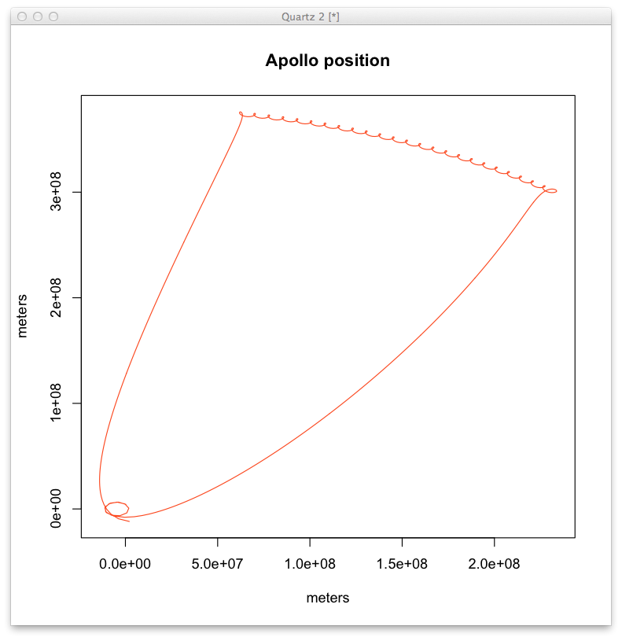
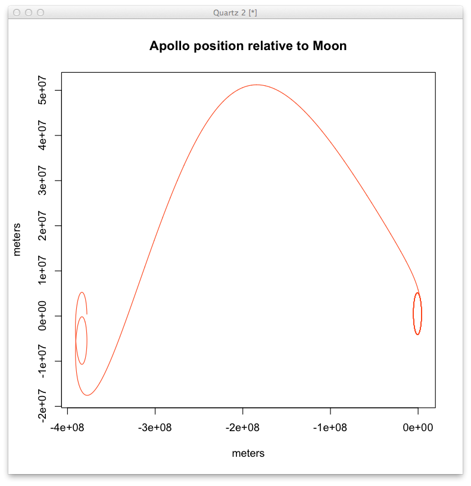
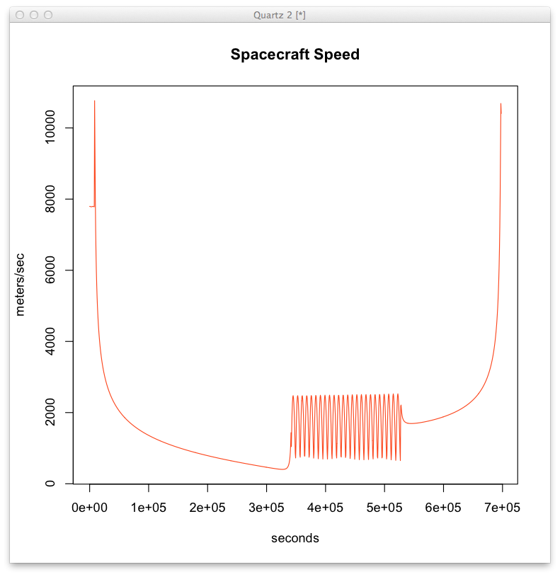

|
2014 Mar 09 |
|
In this QuickTime example simulate the Apollo 11 mission. I also plotted the magnitude of the velocity vector using my python wrappers to find the speed a the end of the TLI burn. I was pleased to see that after accounting for propellant used in the parking orbit insertion it was 10,799.13 meters/second, within 0.4% of the published value of 35,533 fps at TLI cutoff. |
|  |
|  |
|  |